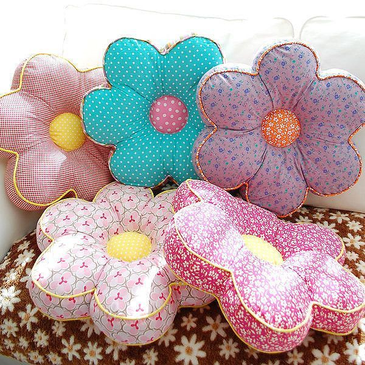

Из Китая с любовью: коленные подушки и зеркальце-указка - Авто Mail.ru
 Mail.ru Почта Мой Мир Одноклассники ВКонтакте Игры Знакомства Новости Поиск Облако Combo Все проекты Все проекты выход Регистрация Вход s s Закрыть 22 января 2021 17:05 , Статьи , ЛайфстайлИз Китая с любовью: коленные подушки и зеркальце-указка
Авто Mail.ru рассказывает, какие нужные и полезные девайсы для начинающего и для опытного водителя можно заказать на АлиЭкспрессСветодиодный ошейник для собаки
Почему стоит купить: В темное время суток пешеходы должны быть заметны на дороге. Для этого им стоит надевать светоотражающий аксессуар. Причем не только себе, но и питомцу, который на прогулке становится почти невидимым для водителей. Светодиодный ошейник поможет решить эту проблему. И хотя человеку за рулем будет непросто понять, что это за парящий в воздухе светящийся объект движется в его сторону, внимание девайс к себе точно привлечет.
Что пишут в отзывах: Отличный ошейник. Ярко светит. В комплекте шнур для зарядки. Как только ошейник зарядится — появляется зеленый индикатор на блоке.
Перейти в магазин > >
Нажми, чтобы узнать больше! Светодиодный ошейник для собаки Узнать ценуВакуумный упаковщик для еды
Почему стоит купить: Мы частенько берем с собой в дорогу что-нибудь перекусить. Однако раскладывание бутербродов, овощей и фруктов по разным пакетам — занятие утомительное и хлопотное. Да и упаковка в итоге, скорее всего, будет негерметичной. Такая портативная машинка с АлиЭкспресс поможет не только аккуратно упаковать еду с собой, но и сохранить ее свежесть на время поездки.
Что пишут в отзывах: В комплекте сам упаковщик, кабель питания, набор пакетов для вакуумной упаковки. Простые пакеты и даже особо прочные для заморозки не подойдут для вакуумной упаковки. Позволяет упаковывать объекты шириной менее 30 см.
Перейти в магазин > >
Нажми, чтобы узнать больше! Вакуумный упаковщик для еды Узнать ценуНадувная палатка-капсула
Почему стоит купить: Автомобиль здорово облегчает нам жизнь, упрощая перемещение не только по городу, но и далеко за его пределами. Особенно во время пандемии. Готовясь отправиться в большое путешествие по стране, не забудьте обзавестись палаткой. Например, экзотической прозрачной в форме шара диаметром 3, 4 или 5 м.
Перейти в магазин > >
Нажми, чтобы узнать больше! Надувная палатка-капсула Узнать ценуПортативная кофемашина
Почему стоит купить: Иной кофеман без чашечки эспрессо не может прожить и нескольких часов. Особенно с утра. Для таких людей создана портативная капсульная машина , способная приготовить чашечку бодрящего напитка прямо в дороге. Девайс подключается к прикуривателю и совместим с капсулами Nespresso и Dolce Gusto.
Что пишут в отзывах: Хорошее качество. Аналоги стоят дороже. Берите с блоком питания от розетки. Мощность у блока 60 ватт. Сложно такой купить. Кофе из капсул получается вкуснее почему-то. Но я и брал для капсул. Температура на выходе в норме — кофе горячий.
Перейти в магазин > >
Нажми, чтобы узнать больше! Портативная кофемашина Узнать ценуМассажер для шеи
Почему стоит купить: Редкий массажер для шеи , которая в долгих поездках затекает не меньше, чем при работе за компьютером, может похвастать такой миниатюрностью и оригинальным дизайном. Функционирующий от встроенных элементов питания девайс с кнопками управления прямо на корпусе весит всего 122 г и доступен на АлиЭкспресс в розовом или синем цвете.
Что пишут в отзывах: Покупатели оценивают этот товар максимальным баллом в пять звезд.
Перейти в магазин > >
Нажми, чтобы узнать больше! Массажер для шеи Узнать ценуСветодиодный фонарь
Почему стоит купить: Маленький стильный светодиодный фонарик со встроенным пауэрбанком — это, пожалуй, идеальное комбо для любого пользователя смартфонов от школьника-велосипедиста до автолюбителя. Заряд встроенной батареи обеспечивает работу устройства на протяжении 3-8 часов. Корпус девайса ударопрочен, выдерживает падение с высоты 1,5 м и доступен в трех цветовых исполнениях.
Что пишут в отзывах: Неплохой карманный фонарик, отличная сборка, хороший аккумулятор, приемлемое освещение.
Перейти в магазин > >
Нажми, чтобы узнать больше! Светодиодный фонарь Узнать ценуРация от Xiaomi
Почему стоит купить: Простая и достаточно компактная рация может пригодиться в поездках с друзьями на двух машинах, в походе или вылазке в лес. 16-канальный девайс , работающий в диапазоне 400 МГц-470 МГц, обеспечит связью на расстоянии от 1 до 5 км. Будет весьма актуален там, где нет сигнала сотовой связи.
Что пишут в отзывах: Покупатели ставят максимальную оценку товару за его характеристики и потребительские свойства.
Перейти в магазин > >
Нажми, чтобы узнать больше! Рация от Xiaomi Узнать ценуОрганайзеры для багажника
Почему стоит купить: Нейлоновая сетка на липучках — одно из самых простых решений для фиксации и размещения мелкой клади в багажнике, не оснащенном нишами и карманами. Такой органайзер можно легко и быстро закрепить на любой поверхности грузового отсека при условии, что она не гладкая и не пластиковая. В карман идеально поместятся тряпки, сумки и даже огнетушитель. Для заказа из Китая доступны варианты пяти размеров.
Что пишут в отзывах: Отличная покупка. Хорошо выглядит, липучка крепко держит.
Перейти в магазин > >
Нажми, чтобы узнать больше! Органайзеры для багажника Узнать ценуШумо- и звукоизоляция
Почему стоит купить: Специальные огнеупорные изоляционные маты шириной 50 см и длиной 2 м предназначены для нанесения на кузов автомобиля. С их помощью можно снизить уровень шума и вибраций в салоне, наклеив изоляцию на пол, потолок, внутрь дверей и под крышкой капота. На выбор предлагаются листы толщиной 5, 10 и 15 мм.
Что пишут в отзывах: Все размеры совпадают. И даже толщина. Хорошая звукоизоляция, также этот материал можно использовать как утеплитель.
Перейти в магазин > >
Нажми, чтобы узнать больше! Шумо- и звукоизоляция Узнать ценуКрючки для салона
Почему стоит купить: Стильные аккуратные крючки пригодятся не только дома или в офисе, чтобы повесить на них ключи, провода от зарядки или что-нибудь еще. Маленький удобный аксессуар можно прицепить в любом удобном месте в салоне машины. Благодаря трем расцветкам на выбор можно заказать на АлиЭкспресс наиболее подходящий вариант: белый, серый или черный.
Что пишут в отзывах: Качественный крючок для провода, двухсторонний скотч держит хорошо, выглядит современно. Я очень доволен этим брендом.
Перейти в магазин > >
Нажми, чтобы узнать больше! Крючки для салона Узнать цену2 DIN магнитола
Почему стоит купить: Мультимедийный комплекс с операционной системой Android 9.1, 7-дюймовым емкостным сенсорным экраном с разрешением 1024x600 пикселей, встроенной навигацией, Wi-Fi модулем и поддержкой Navitel не только проложит маршрут, но и развлечет в пути музыкой. На нем также можно смотреть видео, а среди языков интерфейса есть русский. Благодаря высокому качеству исполнения и наворотам девайс претендует на звание лучшей 2 DIN магнитолы с АлиЭкспресс. Товар доступен для заказа из России и Китая с камерой заднего вида. В комплекте идут кабели подключения и спутниковая антенна.
Что пишут в отзывах: Играет отлично! Лучше, чем Prology 1 DIN. За эти деньги лучше не найти! Сенсор не тормозит. Встроенный микрофон для громкой связи на удивление работает отлично. Слышно четко, никаких посторонних шумов. Вайфай ловит тоже отлично, работает быстро. За эти деньги превзошел все ожидания.
Перейти в магазин > >
Нажми, чтобы узнать больше! 2 DIN магнитола Узнать ценуГубка для мытья автомобиля
Почему стоит купить: Помешанные на чистоте водители, а также те, кто предпочитает проводить уборку в машине самостоятельно, будут в восторге от этой специальной перчатки с мягкой плюшевой поверхностью размером 15x25 см. Она подойдет как для стирания пыли с приборной панели, так для мойки и полировки кузова.
Что пишут в отзывах: Удобная для уборки в салоне. Но не для большой ладони.
Перейти в магазин > >
Нажми, чтобы узнать больше! Губка для мытья автомобиля Узнать ценуПодушки для коленей
Почему стоит купить: Зачастую даже в достаточно дорогих автомобиля салонному пластику местами не хватает мягкости. Особенно в нижней части центральной консоли и по бокам тоннеля, на стенку которого водитель может облокотиться правой ногой во время поездки. Решить эту проблему поможет небольшая мягкая подушка размером 18x8 см из искусственной кожи, которая крепится на двухсторонний скотч. Внутри — пена с эффектом памяти, которая удерживает заданную форму.
Что пишут в отзывах: Сама подушечка в простом пакете (в обычном прозрачном пакете) пришла целая. Насколько износоустойчивая — вопрос, но кожзам выглядит нормально. Правда, непонятно, что будет дальше. Подушка довольно мягкая. С обратной стороны скотч двусторонний. Качество приклеивания на троечку, но и следов не оставляет после отрывания от элементов салона. Скотч неизвестной мне фирмы. За такую цену — однозначно рекомендую.
Перейти в магазин > >
Нажми, чтобы узнать больше! Подушки для коленей Узнать ценуПодсветка для дверей
Почему стоит купить: Безопасность в автомобиле крайне важна. Это касается не только поездки, но и посадки/высадки. Особенно в темное время суток, когда другие участники движения могут не заметить выходящего из припаркованной машины человека. С маленькими светодиодными фонариками-маячками , включающимися при распахивании дверцы, этот маневр не останется незамеченным. На АлиЭкспресс можно заказать комплект из пары девайсов в прозрачных или черных корпусах.
Что пишут в отзывах: Не яркие, но в темноте видно хорошо. Доставка шустрая.
Перейти в магазин > >
Нажми, чтобы узнать больше! Подсветка для дверей Узнать ценуЧехол для руля
Почему стоит купить: Легко надевающаяся оплетка из искусственной кожи придаст облезлому и затертому до блеска старому рулю автомобиля более презентабельный вид. А три контрастных вставки на ободе добавят ярких штрихов скучному серому или черному салону. На выбор доступны несколько расцветок.
Что пишут в отзывах: Чехлом довольна, приятный на ощупь, в холодную погоду руль кажется теплее.
Перейти в магазин > >
Нажми, чтобы узнать больше! Чехол для руля Узнать ценуДержатель для детского ремня безопасности
Почему стоит купить: Перевозка в автомобиле детей до 7 лет на заднем сиденье и до 12 лет на переднем требует обязательного использования специального детского кресла или удерживающего устройства. Доступный в двух исполнениях и нескольких цветовых вариантах держатель ремня безопасности позволит отрегулировать его положение для удобства маленького пассажира в поездке.
Что пишут в отзывах: Описанию соответствует. Удобные накладки, нормально смотрятся. Ткань на ощупь обычная синтетика. Единственный минус, очень шершавый. Под подкладкой вставлена какая то клеёнка.
Перейти в магазин > >
Нажми, чтобы узнать больше! Держатель для детского ремня безопасности Узнать ценуЗеркало на телескопической ручке
Почему стоит купить: Поиски неисправностей где-нибудь в недрах подвески автомобиля или подтеков жидкостей в тесном подкапотном пространстве, а также под днищем может в значительной степени облегчить маленькое круглое зеркальце на вытягивающейся в длину больше полуметра телескопической ручке. С ним можно заглянуть даже в самые неудобные и труднодоступные места.
Что пишут в отзывах: Очень крутое зеркало. Товаром доволен как слон! Фиксация зеркала и самого телескопа четкая. В сложеном виде 180 мм, в разложеном 590 мм.
Перейти в магазин > >
Нажми, чтобы узнать больше! Зеркало на телескопической ручке Узнать ценуДержатель для смартфона
Почему стоит купить: Оригинальный алюминиевый автомобильный держатель смартфона от известного китайского производителя аксессуаров благодаря специальным креплениям устанавливается прямо в слот для загрузки CD на автомагнитоле. На выбор предлагаются модели черного и серебристого цвета.
Что пишут в отзывах: Качество хорошее. Есть один нюанс. Если у вас под дисководом экран с камерой заднего вида, то это не ваш вариант.
Перейти в магазин > >
Нажми, чтобы узнать больше! Держатель для смартфона Узнать ценуОсвежитель воздуха в салоне
Почему стоит купить: Для тех, кому надоели болтающиеся на зеркале заднего вида елочки-вонючки и флаконы с ароматизаторами, на АлиЭкспресс есть более элегантное решение — почти незаметный освежитель воздуха , выглядящий как элемент решетки воздуховода. Он крепится прямо на ее перекладины, не мешая регулировкам направления потока воздуха. Сменный элемент находится на внутренней части.
Что пишут в отзывах: Освежитель действительно прикольный. В комплекте идут сменные пластинки. Запахи хорошие. Доставка до Москвы быстрая. Я очень доволен. Дизайн кстати тоже классный. На воздуховоды Вольво ХС70 сели идеально!
Перейти в магазин > >
Нажми, чтобы узнать больше! Освежитель воздуха в салоне Узнать ценуКарта памяти
Почему стоит купить: Крошечный кусочек пластика, без которого не смогут работать иные смартфоны, навигаторы и видеорегистраторы. SD-карту памяти можно заказать на АлиЭкспресс объемом от 8 до 256 Гб. Производитель обещает высокую скорость записи и чтения данных.
Что пишут в отзывах: Карта соответствует описанию, установил в телефон. Объем и скорость соответствуют.
Перейти в магазин > >
Нажми, чтобы узнать больше! Карта памяти Узнать цену Одноклассники ВКонтакте Facebook Twitter Новый Volkswagen Tiguan – тест-драйв популярного кроссовера Тест-драйв очень необычных моделей Lada Новая Skoda Octavia – тест-драйв бестселлера Тест-драйв новой Lada Niva Travel — что изменилось в машине? Расскажи о своем авто Сделай добро – напиши отзыв Кинопремьеры Родные комедия, драма Love комедия, мелодрама Пончары. Глобальное закругление мультфильмы, комедия Приворот. Черное венчание триллер, мелодрама Hi-Tech США испугались российских подлодок И их темпов модернизации Подо льдами Антарктиды нашли странных существ Новый снимок Марса потряс всех Зачем россияне накрывают роутер фольгой Drivenetwork.ru Что не имеют права делать гаишники с вашей машиной Подсказки водителю: как легко запустить двигатель зимой Марки авто, которые лучше не брать с рук: очень ненадежные Самые надежные автомобили по версии экспертов Подпишитесь на нас Mail.Ru О компании Реклама Отменить Мобильная версия Мы ВКонтакте Мы в Facebook Условия использования материалов Редакция Обратная связь